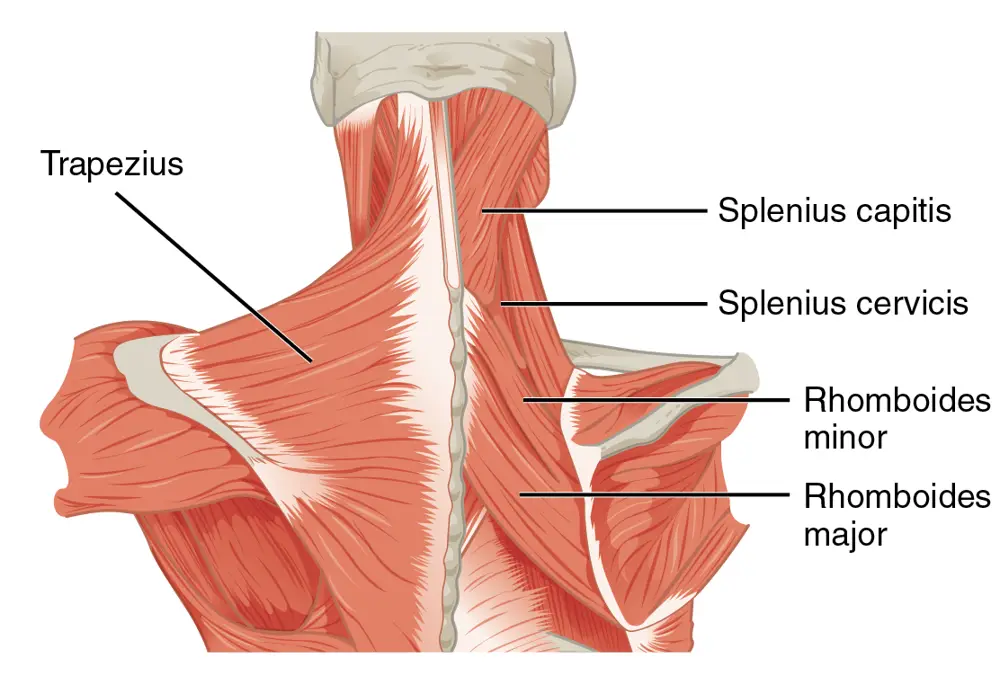

DX.1 — Cervicalgie commune non spécifique
La cervicalgie commune non spécifique reste la cause la plus fréquente de douleur du cou et un diagnostic d’exclusion, posé après une anamnèse et un examen soigneuxS1S3. Sans indice de cause structurelle, le médecin ne demande aucune imagerie et prescrit l’activation, l’éducation et, dans la forme aiguë, des anti-inflammatoires non stéroïdiens (AINS) brefsS3. La chronicité menace plus de la moitié des patients, ce qui impose de repérer tôt les drapeaux jaunesS1.
Ce cours DX.1 reprend les sources citées ; aucun médecin ne l’a encore validé cliniquement.
1. Définition
La cervicalgie se définit comme une douleur ressentie entre la ligne nuchale supérieure, la première vertèbre thoracique et, latéralement, les insertions du trapèze près de l’épauleS3. Elle devient non spécifique lorsque ni l’anamnèse ni l’examen ne révèlent une cause qui exige un traitement ou un bilan particulierS3.
2. Épidémiologie (Suisse, puis Europe)
En Europe occidentale, les données reprises par les Hôpitaux universitaires de Genève (HUG) chiffrent la prévalence à 4,6 % et l’incidence à 0,9 %S1. La Revue médicale suisse indique un pic de prévalence vers 45 ans et une atteinte plus fréquente chez la femme que chez l’hommeS2. La cervicalgie commune occupe donc le premier rang des dix diagnostics de la Phase A, tandis que moins de 1 % des cervicalgies cachent une cause dangereuseS3. Les chiffres suisses puis européens et le poids social et le risque de chronicité détaillent ces données.
Chiffres utiles : Suisse, puis Europe
| Donnée | Valeur | Lieu, période | Source |
|---|---|---|---|
| Prévalence de la cervicalgie, monde | 3,5 % | Monde, étude publiée en 2020, reprise aux HUG en 2021 | S1 |
| Prévalence, Europe occidentale | 4,6 % | Europe occidentale, reprise aux HUG en 2021 | S1 |
| Incidence, Europe occidentale | 0,9 %, en hausse de 2 % entre 1990 et 2017 | Europe occidentale | S1 |
| Prévalence aiguë et chronique | 6,3 %, femmes 7,4 %, hommes 5,2 % | Europe occidentale, 2010, citée par la Revue médicale suisse | S2 |
| Âge du pic de prévalence | Vers 45 ans ; enfants et adolescents aussi touchés | Revue médicale suisse, 2019 | S2 |
| Douleur cervicale dans les douze derniers mois | 46 % des adultes (N = 5009) | Allemagne, enquête téléphonique représentative BURDEN (étude allemande sur le fardeau des maladies) | S3 |
| Prévalence ponctuelle | Environ 5 %, stable depuis des années | Allemagne | S3 |
| Rang parmi les motifs de consultation | Troisième motif chez le médecin de famille | Allemagne | S3 |
| Cause dangereuse sous-jacente | Moins de 1 % des cas | Allemagne, 2025 | S3 |
Les chiffres suisses publiés restent des reprises de données européennes, car aucune source suisse lue ne mesure directement la fréquence nationaleS1S2. La différence entre 4,6 % et 6,3 % tient surtout à l’année et à la définition retenues, ce qui relève d’une déduction de lectureS1S2.
Poids social et risque de chronicité
| Conséquence | Mesure | Lecture clinique | Source |
|---|---|---|---|
| Persistance après un premier épisode | 50 à 85 % des patients ont encore mal 1 à 5 ans après | Une guérison rapide reste l’exception, ce qui justifie l’éducation dès la première consultation | S2 |
| Persistance des douleurs | Plus de 50 % des cas | Les facteurs psychologiques pèsent plus que l’imagerie | S1 |
| Invalidité, étude Global Burden of Disease 2010 | Quatrième cause en années vécues avec une invalidité | Charge comparable aux grandes maladies chroniques | S2 |
| Réadaptations pour maladies de l’appareil locomoteur | 42 % de toutes les mesures en 2018 | Allemagne : part probablement attribuable en partie au cou | S3 |
| Rentes pour capacité de gain réduite | 13 % en 2020, troisième rang | Allemagne : après maladies psychiques et tumeurs | S3 |
Le pronostic dépend surtout de la santé psychologique, de l’anxiété, de l’adaptation et des conflits juridiques, selon le service de rhumatologie des HUGS1.
3. Physiopathologie
La cervicalgie commune relève d’un mécanisme mécanique, qui augmente au cours de la journée et à l’activité, alors que la douleur inflammatoire domine le matinS1. Les HUG rangent dans les causes axiales la contracture musculaire, les troubles dégénératifs mal corrélés à la radiographie et la douleur myofascialeS1. Les mécanismes proposés et les facteurs de risque expliquent pourquoi l’imagerie aide si peu.
Mécanismes proposés et portée clinique
| Mécanisme | Ce qui se passe | Conséquence pour le médecin | Source |
|---|---|---|---|
| Contracture musculaire | Contracture aiguë ou subaiguë, souvent secondaire | Chercher la cause déclenchante plutôt que traiter le muscle seul | S1 |
| Point gâchette myofascial | Libération excessive d’acétylcholine à la plaque motrice, contraction prolongée du sarcomère, ischémie locale | Les substances algogènes sensibilisent les nocicepteurs et créent une douleur référée | S2 |
| Sensibilisation | Stimuli nociceptifs prolongés, hyperalgésie, allodynie | Une douleur diffuse n’oriente pas vers une lésion grave | S2 |
| Posture devant l’écran | Épaules haussées, cou tendu vers l’avant, respiration retenue par intermittence | Les tensions musculaires augmentent ; la correction posturale vise ce mécanisme | S2 |
| Dégénérescence discale et arthrose | Ostéophytes et atteinte des tissus mous voisins | Mauvaise corrélation radio-clinique : une arthrose visible n’explique pas la douleur | S1S2 |
| Imagerie par résonance magnétique | Aucune différence entre 715 cervicalgies non spécifiques et 2323 témoins sans douleur | L’image anormale reste fréquente chez le sujet sain | S1 |
La méta-analyse de 31 études citée aux HUG ne montre aucune différence d’atteinte discale, de signe de Modic ou d’atrophie musculaire entre ces groupesS1. Le médecin interroge et examine donc avant de regarder l’image, ce que recommandent les HUGS1.
Facteurs de risque de cervicalgie
| Type | Facteur | Levier d’action | Source |
|---|---|---|---|
| Non modifiable | Âge moyen, sexe féminin | Information seulement | S1 |
| Non retenu | Arthrose : les HUG précisent qu’elle n’est pas un facteur de risque | Éviter de l’annoncer comme cause | S1 |
| Modifiable, personnel | Troubles psychologiques, tabac, manque d’activité physique | L’activité physique protège | S1 |
| Modifiable, poste de travail | Travail répétitif et de précision, position assise ou debout prolongée, cou fléchi longtemps | Pauses, alternance des positions | S1 |
| Modifiable, ergonomie | Clavier trop près du bord, souris imposant une flexion des épaules de plus de 25°, écran incliné de plus de 3° | Réglage du poste | S1 |
| Modifiable, psychosocial | Pression psychologique, faible soutien des collègues, insécurité de l’emploi | Dialogue avec le patient et, si utile, l’employeur | S1 |
| Contexte | Anxiété, dépression, tensions musculaires, activités sportives ou professionnelles | Repérage dès la première consultation | S2 |
4. Démarche diagnostique
La démarche poursuit trois buts : écarter avec une confiance raisonnable une cause dangereuse au premier contact, fonder les conseils et protéger le patient d’examens excessifsS3. Si l’anamnèse et l’examen ne montrent aucun indice de cause structurelle, le médecin ne prescrit aucun examen supplémentaire à ce stadeS3. Les étapes de la consultation et le calendrier de réévaluation précisent la conduite.
Étapes de la démarche, de l’accueil à la décision
| Étape | Action | Seuil ou signe | Conduite | Source |
|---|---|---|---|---|
| 1. Écarter l’urgence | Rechercher fracture, infection, maladie auto-immune, radiculopathie, tumeur | Un drapeau rouge présent | Bilan ciblé, renvoi vers le DX correspondant | S3 |
| 2. Typer la douleur | Horaire, réveils, raideur matinale, effet des anti-inflammatoires non stéroïdiens (AINS) | Raideur matinale de plus de 30 minutes, réveil en deuxième partie de nuit | Penser à une cause inflammatoire | S1 |
| 3. Chercher une atteinte neurologique | Irradiation dans un dermatome, déficit moteur, troubles sphinctériens | Déficit ou irradiation radiculaire | Examen neurologique complet ; DX.2 ou DX.3 | S3 |
| 4. Repérer les drapeaux jaunes | Dépression, détresse, conceptions sur la douleur, facteurs professionnels | Facteur présent | Le prendre en charge dès le début | S3 |
| 5. Conclure | Aucun indice structurel | Cervicalgie non spécifique | Activation, éducation, aucune imagerie | S3 |
Calendrier de réévaluation
| Moment | Question posée | Décision | Source |
|---|---|---|---|
| Premier contact | Existe-t-il un indice de cause structurelle ? | Non : traitement actif sans examen | S3 |
| Aggravation sévère ou déficit neurologique | La situation a-t-elle changé avant 4 semaines ? | Réévaluer plus tôt l’indication à l’imagerie | S3 |
| Après 4 à 6 semaines | La douleur limite-t-elle l’activité ou progresse-t-elle malgré un traitement conforme ? | Revoir l’indication d’une imagerie en coupe | S3 |
| Plus de 6 semaines, symptômes modérés à sévères | L’indication de radiographie retenue aux HUG est-elle remplie ? | Discuter la radiographie, en tenant compte de la divergence allemande | S1S3 |
| Plus de 12 semaines | La douleur devient-elle chronique ? | Thérapie par l’exercice ; la recommandation allemande déconseille alors les AINS | S3 |
Une douleur qui persiste plus de quatre semaines malgré un traitement conforme peut révéler une cause structurelle passée inaperçue au départS3.
5. Anamnèse ciblée et drapeaux rouges
L’anamnèse reste l’outil fondamental, car les HUG rappellent qu’en l’absence de drapeau rouge l’imagerie n’est pas nécessaireS1. Le médecin décrit la qualité, le siège, l’intensité sur une échelle numérique, la durée et l’irradiation, puis il recherche une douleur nocturneS3. Les questions ciblées, les drapeaux rouges et les drapeaux jaunes structurent l’entretien.
Questions ciblées et réponses qui orientent
| Question | Réponse rassurante | Réponse qui oriente vers une cause structurelle | Source |
|---|---|---|---|
| La douleur descend-elle dans le bras ? | Douleur limitée au cou et aux trapèzes | Irradiation dans un dermatome précis ou franchissant ses limites | S3 |
| Avez-vous mal la nuit ? | Gêne au changement de position | Douleur nocturne persistante | S1S3 |
| Avez-vous perdu de la force ou de la finesse dans les mains ? | Non | Déficit moteur, motricité fine altérée, engourdissement | S3 |
| Avez-vous des vertiges, une marche instable, des acouphènes ou des troubles visuels ? | Non | Symptôme présent : examen neurologique et vasculaire | S3 |
| Avez-vous de la fièvre ou des frissons ? | Non | Fièvre, frissons, infection récente | S3 |
| Avez-vous subi un choc ? | Aucun traumatisme | Traumatisme adéquat, différent des épisodes antérieurs | S3 |
| Prenez-vous des corticoïdes ou des immunosuppresseurs ? | Non | Tumeur, ostéoporose, maladie auto-immune, immunosuppression | S3 |
| Avez-vous maigri ou sué la nuit ? | Non | Perte de poids, sueurs nocturnes, baisse de la condition physique | S3 |
| Avez-vous reçu une manipulation ou une injection ? | Non | Intervention récente à documenter | S3 |
Drapeaux rouges : hypothèse et conduite
| Drapeau rouge | Hypothèse | Conduite immédiate | Source |
|---|---|---|---|
| État fébrile, céphalées | Méningite, spondylodiscite | Examen méningé, bilan inflammatoire ; DX.5 ou DX.8 | S1 |
| Céphalée brutale avec raideur de nuque | Hémorragie sous-arachnoïdienne | Urgence ; DX.6 | S1 |
| Paresthésies, déficit, troubles de l’équilibre ou des sphincters, signe de Lhermitte | Myélopathie ou radiculopathie | Examen neurologique ; DX.3 ou DX.2 | S1 |
| Cancer, symptômes B, perte de poids inexpliquée, adénopathie cervicale | Néoplasie primaire ou secondaire | Bilan oncologique ciblé | S1 |
| Douleurs nocturnes persistantes, rhumatisme inflammatoire | Cause inflammatoire ou atteinte atlanto-axoïdienne | Bilan rhumatologique ; DX.10 | S1 |
| Immunosuppression, injection de drogue intraveineuse | Infection rachidienne | Bilan infectieux ; DX.8 | S1 |
| Traumatisme | Fracture | Immobilisation et imagerie ; DX.4 | S1 |
| Troubles visuels | Dissection artérielle vertébrale | Avis urgent ; DX.7 | S1 |
Drapeaux jaunes : risque de chronicité
| Drapeau jaune | Ce qu’il annonce | Réponse du médecin | Source |
|---|---|---|---|
| Douleur permanente, diurne et nocturne | Risque de chronicité | Expliquer le modèle de la douleur et planifier l’activité | S1 |
| Douleur attribuée franchement à un événement professionnel ou accidentel ancien | Fixation sur une cause | Éducation sur la douleur | S1 |
| Conflit médico-légal ou médicosocial | Mauvais pronostic | Coordination précoce avec les intervenants | S1 |
| Arrêt de travail de longue durée | Désadaptation | Plan de reprise progressive | S1 |
| Handicap important contrastant avec des examens normaux | Facteurs psychosociaux dominants | Évaluer anxiété et dépression | S1 |
| Catastrophisme, dépression, anxiété | Chronicisation | Thérapie cognitivo-comportementale dans un concept multimodal | S1S3 |
6. Examen physique ciblé, région par région
L’anamnèse fixe l’étendue de l’examen, mais l’examen minimal comprend toujours l’état général, l’inspection, la palpation et la mobilitéS3. Un examen neurologique s’ajoute dès que l’anamnèse suggère un déficit, et les HUG y joignent l’examen vasculaire, des épaules et des poumonsS1S3. Chaque région figure dans sa propre fenêtre : état général, inspection, palpation, mobilité, examen neurologique et organes voisins.
État général et conscience
Inspection du cou et du rachis
Palpation : repères osseux et musculaires
| Repère | Technique | Interprétation | Source |
|---|---|---|---|
| Processus épineux de la deuxième vertèbre cervicale (C2) | Premier processus épineux palpable | Repère du niveau haut | S1 |
| Processus épineux de la septième vertèbre cervicale (C7) | Processus le plus proéminent | Repère du niveau bas | S1 |
| Processus transverses | Pression latérale douce | Douleur localisée à noter | S3 |
| Muscles | Recherche de sensibilité et de spasme | Tension musculaire compatible avec une cause mécanique | S1S3 |
| Peau | Recherche d’allodynie et de chaleur | Chaleur locale : cause structurelle possible | S1S3 |
Muscles de la nuque et du haut du dos. OpenStax représente en couleurs les muscles postérieurs que le médecin palpe à la recherche de tensionsS4.

Le lecteur cherche d’abord seul le trapèze, les splénius et la ligne des processus épineux, puis il compare avec la copie annotée.
- Le trapèze couvre la nuque et l’épaule ; sa bordure délimite latéralement la région cervicale douloureuseS3S4.
- Le splénius de la tête se palpe sous le trapèze et participe à la rotation et à l’extension de la têteS4.
- Le splénius du cou prolonge ce plan vers le bas et se contracte souvent dans la cervicalgie communeS1S4.
- Le rhomboïde mineur relie le rachis à l’omoplate et peut porter des points gâchettes myofasciauxS2S4.
- La ligne médiane suit les processus épineux, dont la palpation fait partie de l’examen minimalS3S4.
La palpation cherche des muscles tendus et une température cutanée augmentée, qui oriente vers une cause structurelleS3.
Mobilité cervicale : mesures et limites
| Mouvement | Mesure | Repère chiffré | Interprétation | Source |
|---|---|---|---|---|
| Flexion et extension | Distance menton-sternum | À noter en centimètres pour le suivi | Limitation marquée : cause structurelle possible | S1S3 |
| Rotation | Examinateur derrière le patient assis | Normale au-delà de 60 % ; 50 % de la rotation se fait en C1-C2 | Asymétrie à confronter à l’anamnèse | S1 |
| Inclinaison latérale | Distance tragus-épaule | À noter en centimètres pour le suivi | Raideur douloureuse fréquente et non spécifique | S1 |
Le médecin note ces distances lors de la première visite, car leur évolution chiffrée sert ensuite à juger l’effet du traitement actif, ce qui constitue une déduction pratiqueS1.
Examen neurologique si l’anamnèse l’exige
| Test | Technique | Résultat positif | Conduite | Source |
|---|---|---|---|---|
| Force | Testing musculaire selon Janda | Déficit segmentaire | Penser à une racine : DX.2 | S3 |
| Adresse manuelle | Épreuve doigt-nez, diadococinésie | Maladresse | Penser à la moelle : DX.3 | S3 |
| Sensibilité | Territoires sensitifs | Hypoesthésie dans un dermatome | Topographier la racine | S3 |
| Équilibre et marche | Marche, station | Instabilité | Recherche de myélopathie | S3 |
| Réflexes | Bicipital, stylo-radial, tricipital | Asymétrie | Atteinte radiculaire ou médullaire | S3 |
| Test de Spurling | Pression axiale et flexion de la tête vers le côté douloureux, patient assis | La douleur augmente | Origine radiculaire | S3 |
| Test de mise en tension du membre supérieur | Étirement des nerfs médian, radial et ulnaire, patient couché | La douleur augmente | Origine radiculaire | S3 |
| Test de soulagement par abduction de l’épaule | Main posée sur la tête | La douleur radiculaire diminue | Origine radiculaire | S1 |
Organes voisins et douleur projetée
| Région | Ce qui peut imiter une cervicalgie | Examen | Source |
|---|---|---|---|
| Épaule | Douleur projetée de l’épaule | Mobilité de l’épaule | S1 |
| Défilé thoracique | Douleur non axiale référée | Examen vasculaire du membre supérieur | S1 |
| Viscères | Œsophage, apex pulmonaire | Auscultation, examen ciblé | S1 |
| Vaisseaux | Cause vasculaire ou cardiovasculaire | Examen vasculaire | S1 |
7. Approche syndromique
Le médecin range la plainte dans un syndrome avant de nommer le diagnostic, car chaque syndrome mène à un autre cours du lotS1. Le syndrome axial mécanique isolé, sans signe neurologique ni inflammatoire, correspond à la cervicalgie communeS1S3. Le tableau des syndromes montre, pour chaque profil clinique, le diagnostic du lot que le médecin doit évoquer.
Syndromes et diagnostics du lot
| Syndrome | Indices | Diagnostic à évoquer | Source |
|---|---|---|---|
| Axial mécanique | Douleur croissante à l’activité, réveils au changement de position, peu d’effet des AINS | Cervicalgie commune non spécifique (ce cours) | S1 |
| Axial inflammatoire | Pire le matin, raideur matinale de plus de 30 minutes, bon effet des AINS | Rhumatisme inflammatoire, DX.9, DX.10 | S1 |
| Radiculaire | Irradiation dans un dermatome, Spurling positif | DX.2 | S1S3 |
| Médullaire | Maladresse des mains, troubles de la marche, signe de Lhermitte | DX.3 | S1S3 |
| Méningé | Céphalée, fièvre, raideur de nuque | DX.5, DX.6 | S1 |
| Traumatique | Choc récent | DX.4 | S1S3 |
| Infectieux rachidien | Fièvre, immunosuppression, injection intraveineuse | DX.8 | S1 |
| Vasculaire | Troubles visuels, douleur cervicale inhabituelle | DX.7 | S1 |
Un même patient peut cumuler deux syndromes, si bien qu’un profil mécanique n’autorise jamais à négliger un signe neurologique associéS3.
8. Diagnostic positif et critères
Le diagnostic positif reste un diagnostic d’exclusion : il exige une douleur dans la région définie et l’absence de tout indice de cause structurelle à l’anamnèse et à l’examenS3. La grille des critères et la classification par durée fixent le vocabulaire.
Critères du diagnostic positif
| Critère | Exigence | Si le critère manque | Source |
|---|---|---|---|
| Topographie | Douleur entre ligne nuchale supérieure, première vertèbre thoracique et insertions du trapèze | Rechercher une douleur projetée | S3 |
| Anamnèse | Aucun indice structurel : pas de déficit, pas de fièvre, pas de traumatisme adéquat, pas de symptôme B | Cause structurelle à rechercher | S3 |
| Examen | État général conservé, pas de déficit, pas d’érythème ni de chaleur, pas de limitation majeure | Bilan ciblé | S3 |
| Profil | Douleur mécanique | Douleur inflammatoire : autre piste | S1 |
9. Examens complémentaires
Aucune imagerie ne se justifie dans la cervicalgie aiguë ou récidivante sans indice de cause structurelle, avec un niveau de preuve IV et une recommandation de grade AS3. Les HUG retiennent des indications de radiographie plus larges, d’où une divergence à connaîtreS1S3. Le tableau des examens ciblés précise pour chacun l’indication, le seuil, l’interprétation et la conduite. La fenêtre consacrée à l’imagerie trompeuse explique pourquoi une image anormale égare souvent le diagnostic.
Examens ciblés : indication, seuil, interprétation, conduite
| Examen | Indication | Seuil ou délai | Interprétation | Conduite | Source |
|---|---|---|---|---|---|
| Aucun examen | Cervicalgie sans indice structurel | Premier contact | Diagnostic clinique | Traitement actif | S3 |
| Radiographie face, profil, éventuellement obliques, transbuccale ou fonctionnelle | Âge de plus de 50 ans, symptômes modérés à sévères | Plus de 6 semaines, ou d’emblée si déficit, traumatisme, risque infectieux ou tumoral | Lésions dégénératives fréquentes et peu corrélées | Toujours confronter à la clinique | S1 |
| Protéine C réactive (CRP) | Suspicion de cause inflammatoire | Douleur inflammatoire ou fièvre | Élévation : cause inflammatoire ou infectieuse | Bilan ciblé | S1 |
| Tomodensitométrie (CT) | Suspicion de fracture | Traumatisme | Trait de fracture | DX.4 | S1 |
| Imagerie par résonance magnétique (IRM) | Compression radiculaire, atteinte médullaire, infection, inflammation, néoplasie | Déficit, drapeau rouge, ou échec après 4 à 6 semaines | Anomalies fréquentes chez le sujet sain | Interpréter seulement avec la clinique | S1S3 |
| Électroneuromyographie (ENMG) | Trouble neurologique périphérique, atteinte radiculaire | Doute clinique persistant | Topographie de l’atteinte | Orientation vers DX.2 | S1 |
Radiographie : divergence entre Genève et la recommandation allemande
| Point | HUG, 2021 | Recommandation S3 allemande, 2025 | Conduite proposée | Source |
|---|---|---|---|---|
| Place de la radiographie | Indiquée selon l’âge, la durée, le déficit, le traumatisme ou le risque | Jugée insuffisamment sensible pour rechercher une cause structurelle | Préférer une imagerie en coupe si une imagerie est indiquée | S1S3 |
| Délai avant imagerie | Plus de 6 semaines de symptômes modérés à sévères | Revoir l’indication après 4 à 6 semaines d’échec | Délais concordants | S1S3 |
| Sans drapeau rouge | Imagerie non nécessaire | Aucune imagerie, grade A | Concordance complète | S1S3 |
La conduite proposée dans la dernière colonne relève d’une déduction de lecture, puisque aucune source suisse lue ne tranche directement cette divergenceS1S3.
IRM : pourquoi une image anormale trompe
| Groupe comparé | Effectif | Résultat | Source |
|---|---|---|---|
| Études incluses | 31 | Méta-analyse citée aux HUG | S1 |
| Troubles associés au coup du lapin | 994 | Aucune différence d’image | S1 |
| Cervicalgies non spécifiques | 715 | Aucune différence d’image | S1 |
| Témoins sans douleur | 2323 | Atteinte discale, signe de Modic, atrophie musculaire aussi fréquents | S1 |
10. Arbre décisionnel
- Si un drapeau rouge apparaît, le médecin quitte ce cours et suit le diagnostic urgent correspondant, en premier lieu la fracture, l’infection ou l’hémorragieS1S3.
- Si la douleur suit un horaire inflammatoire, il demande une protéine C réactive et cherche un rhumatisme, car ce profil sort de la cervicalgie communeS1.
- Si l’anamnèse évoque un déficit, il complète l’examen neurologique, puis oriente vers une racine ou vers la moelle selon les signes trouvésS3.
- Si l’examen reste normal, il pose le diagnostic de cervicalgie non spécifique, explique le pronostic et prescrit l’activation sans imagerieS3.
- Si la douleur limite encore l’activité après 4 à 6 semaines de traitement conforme, il revoit l’indication d’une imagerie en coupeS3.
- Si la douleur dépasse 12 semaines, il renforce l’exercice et l’éducation, cesse les AINS et traite les facteurs psychosociauxS3.
Le tableau de synthèse résume cet arbre en une décision par situation.
Arbre décisionnel en tableau
| Situation | Décision | Délai | Source |
|---|---|---|---|
| Drapeau rouge | Bilan urgent ciblé | Le jour même | S1S3 |
| Profil inflammatoire | CRP, avis rhumatologique | Quelques jours | S1 |
| Indice neurologique | Examen neurologique complet, IRM selon les signes | Selon la gravité | S1S3 |
| Aucun indice | Activation, éducation, chaleur, AINS brefs si besoin | Réévaluation à 4 à 6 semaines | S3 |
| Échec après 4 à 6 semaines | Imagerie en coupe discutée | À ce moment | S3 |
| Chronicité | Exercice, éducation, thérapie cognitivo-comportementale | Au-delà de 12 semaines | S3 |
11. Prise en charge selon les recommandations suisses
11.A But : soulager assez pour permettre le mouvement, rétablir la fonction le plus tôt possible et prévenir la chronicisation, sans médicalisation inutileS1S3.
11.B Moyens : les HUG jugent efficaces l’antalgie, les exercices supervisés, la mobilisation, la manipulation douce et la thermothérapie, et privilégient le traitement actif avec auto-gestionS1. Le traitement structuré précise molécule, dose de l’information professionnelle suisse des médicaments (AIPS), durée, contrôle et critère d’échecS5S6. Les fiches paracétamol et ibuprofène recopient l’AIPS. Les thérapies physiques, les mesures à éviter, la manipulation cervicale, l’éducation du patient et les grades de la recommandation allemande complètent les moyens.
Traitement structuré de la cervicalgie commune
| Problème | Moyen | Dose AIPS ou modalité | Durée et contrôle | Critère d’échec | Source |
|---|---|---|---|---|---|
| Douleur aiguë limitant le mouvement | Ibuprofène, Brufen | Dans les affections rhumatismales, 1200 à 1800 mg par jour en plusieurs doses ; entretien de 600 à 1200 mg par jourS6 | Période la plus courte possible ; la recommandation allemande ne retient les AINS que pour la forme aiguëS3 | Douleur inchangée ou effet indésirable digestif | S6S3 |
| Douleur faible à modérée, AINS contre-indiqué | Paracétamol, Dafalgan | Adulte de plus de 40 kg : 500 à 1000 mg par prise, au maximum 4000 mg par jourS5 | Intervalle de 4 à 8 heures entre les prisesS5 | Douleur persistante : revoir le diagnostic | S5 |
| Peur du mouvement, passivité | Éducation, dont l’éducation aux neurosciences de la douleur | Explication du mécanisme et du bon pronostic | Dès la première consultation | Kinésiophobie persistante | S3 |
| Raideur et douleur | Activité physique et exercices simples de mobilisation | Choix selon les préférences du patient | Quotidien ; contrôle à 4 à 6 semaines | Limitation persistante malgré un traitement conforme | S3 |
| Contracture | Chaleur appliquée par le patient, froid si agréable | Coussin chauffant, par exemple | Selon le confort | Aucun effet | S3 |
| Douleur chronique | Thérapie par l’exercice, grade A | Exercices de renforcement et de proprioception | Au-delà de 12 semaines | Échec : concept multimodal avec thérapie cognitivo-comportementale | S3S2 |
La recommandation allemande ne retient aucun autre antalgique que les AINS et, en cas de contre-indication, le métamizoleS3. Le paracétamol figure ici pour sa place dans l’AIPS suisse, et cette divergence reste signalée au lecteurS5S3.
Paracétamol — DAFALGAN® (n° 47503)
| Rubrique | Contenu de l’AIPS (information professionnelle suisse) |
|---|---|
| Indication | « Traitement contre les douleurs d'intensité faible à modérée (maux de tête, maux de dents, douleurs articulaires et ligamentaires, douleurs dorsales, douleurs pendant la menstruation, douleurs après blessures, douleurs lors de refroidissements). »S5 |
| Posologie de l’adulte | « Il ne faut pas dépasser la dose journalière maximale de 4000 mg de paracétamol. »S5 Au-delà de 40 kg, la dose unitaire va de 500 à 1000 mg par priseS5. |
| Intervalle | « Respecter un intervalle de 4 à 8 h (adultes) ou 6 à 8 h (enfants) entre chaque prise. »S5 |
| Contre-indications | « Hypersensibilité au paracétamol et aux substances apparentées (p.ex. propacétamol) ou à un des excipients selon la composition. » « Troubles fonctionnels hépatiques graves (cirrhose hépatique et ascite)/hépatite aiguë ou maladie hépatique décompensée active. » « Hyperbilirubinémie constitutionnelle héréditaire (maladie de Gilbert). »S5 |
| Grossesse | « En cas de nécessité clinique, le paracétamol peut être pris ou utilisé pendant la grossesse. Toutefois, il convient de prendre ou d'utiliser la dose efficace la plus faible pendant la durée la plus courte possible et à la fréquence la plus basse possible. »S5 |
| Allaitement | « Le paracétamol passe dans le lait maternel. » « Bien que l'utilisation du paracétamol soit considérée comme compatible avec l'allaitement, la prudence est de mise lors de l'utilisation du Dafalgan pendant l'allaitement. »S5 |
| Mise à jour | Juillet 2026S5. |
L’AIPS rappelle de vérifier qu’aucun autre médicament pris ne contient de paracétamol, afin de prévenir le surdosageS5.
Ibuprofène — Brufen® (n° 45031)
| Rubrique | Contenu de l’AIPS (information professionnelle suisse) |
|---|---|
| Indication | Parmi les formes rhumatismales extra-articulaires, l’AIPS cite : « Myalgies, périarthrite, périarthropathie huméroscapulaire, bursites, tendinites, ténosynovites et lombalgies, névralgies secondaires à des lésions discales. »S6 |
| Principe de dose | « Utiliser la dose efficace la plus faible possible pendant le minimum de temps nécessaire pour atténuer les symptômes »S6. |
| Posologie de l’adulte | « La dose initiale d'ibuprofène dans les affections rhumatismales est de 1200-1800 mg/jour, répartie en plusieurs doses. » « Pour de nombreux patients, une dose d'entretien de 600-1200 mg/jour suffit. »S6 |
| Contre-indications | « Pendant le troisième trimestre de la grossesse » ; « Ulcère gastrique et/ou duodénal ou hémorragie gastro-intestinale actifs ou dans l'anamnèse » ; « Tendance accrue aux saignements. » ; « Insuffisance rénale grave (clairance de la créatinine <30 ml/min). » ; « Insuffisance cardiaque grave (NYHA III-IV). »S6 La liste complète comprend aussi l’hypersensibilité, l’asthme induit par l’aspirine, les maladies inflammatoires intestinales et l’atteinte hépatique graveS6. |
| Grossesse | « A moins d'une nécessité clairement établie, l'utilisation de l'ibuprofène est à éviter au cours du premier et du deuxième trimestre de la grossesse. » « L'ibuprofène est contre-indiqué au cours du troisième trimestre de la grossesse. »S6 |
| Allaitement | « Les anti-rhumatismaux non stéroïdiens passent dans le lait maternel. Par prudence, l'ibuprofène ne doit donc pas être pris pendant l'allaitement. Si le traitement est indispensable, le nourrisson doit être sevré. »S6 |
| Mise à jour | Décembre 2024S6. |
Les effets digestifs et le risque cardiovasculaire au long cours expliquent pourquoi la recommandation allemande déconseille les AINS dans la cervicalgie chroniqueS3.
Thérapies physiques : preuves et place
| Thérapie | Effet rapporté | Niveau de preuve ou place | Effets indésirables | Source |
|---|---|---|---|---|
| Exercices actifs | Bénéfice du renforcement dans la cervicalgie chronique | Preuve modérée ; recommandés par la plupart des guides | Céphalées ou douleurs transitoires | S2 |
| Aiguilletage à sec | Bénéfice à court et moyen terme, proche d’une injection de lidocaïne | Preuve modérée | Hématomes fréquents ; pneumothorax exceptionnel | S2 |
| Laser de faible niveau | Efficace selon une méta-analyse | Deuxième ligne en Suisse ; déconseillé en Allemagne | Fatigue, nausées, céphalées | S2S3 |
| Acupuncture | Efficace à court terme | Recommandée en Suisse ; en Allemagne seulement dans la forme chronique avec activation | Rares lésions graves décrites | S2S3 |
| Mobilisation avec ou sans impulsion | Douleur et fonction améliorées | Première ou deuxième intention | Rares effets graves avec impulsion | S2 |
| Stimulation électrique transcutanée | Probablement efficace | Proposée dans la forme aiguë en Suisse ; déconseillée en Allemagne | Léger inconfort | S2S3 |
| Massage | Effet sur la fonction et la sensibilité | Deuxième ligne ; non prescrit dans la forme aiguë en Allemagne | Inconfort transitoire | S2S3 |
| Ruban élastique | Gain minime, peut-être sans portée clinique | Deuxième ligne en Suisse ; déconseillé en Allemagne | Irritation cutanée | S2S3 |
| Minerve souple | Aucun bénéfice démontré | Au plus 3 heures par jour et 2 semaines | Atrophie musculaire au-delà de 2 semaines | S2 |
Les divergences entre la Revue médicale suisse de 2019 et la recommandation allemande de 2025 portent sur les thérapies passives, que la seconde juge peu prouvées et propices à la passivitéS2S3.
Mesures à éviter
| À éviter | Raison | Alternative | Source |
|---|---|---|---|
| Imagerie sans indice structurel | Anomalies fréquentes sans lien avec la douleur | Anamnèse et examen soigneux | S3 |
| Immobilisation | Médicalisation, atrophie musculaire | Activité physique | S3 |
| Myorelaxants | Non recommandés, ni aigus ni chroniques | Chaleur, exercices | S3 |
| Opioïdes | Non recommandés | AINS brefs, éducation | S3 |
| AINS par voie parentérale | Non recommandés | Voie orale | S3 |
| Cannabis | Recommandation fortement négative en raison du potentiel addictif | Approche active | S3 |
| Traction mécanique | Recommandation négative | Exercices | S3 |
| Traitements invasifs, infiltrations | Aucune preuve dans la cervicalgie sans radiculopathie | Traitement conservateur actif | S1 |
Manipulation cervicale : bénéfice et risque
| Question | Donnée | Lecture | Source |
|---|---|---|---|
| Risque d’accident vasculaire vertébrobasilaire | Pas d’augmentation retrouvée par un mécanisme hémodynamique | Risque faible | S1 |
| Risque de dissection artérielle | Petite association, avec études peu nombreuses et de faible qualité | Prudence ; penser à DX.7 | S1 |
| Effets graves rares avec impulsion | Accident vasculaire sur dissection, hernie discale, déficit grave, voire décès | Information du patient | S2 |
| Efficacité | Équivalente avec et sans impulsion | La mobilisation sans impulsion paraît plus sûre | S2 |
| Praticiens en Suisse | Médecins formés par la Société suisse de médecine manuelle, ostéopathes, chiropraticiens | Orientation vers un praticien qualifié | S2 |
La conclusion de préférer la mobilisation sans impulsion relève d’une déduction de lecture, puisque l’efficacité est équivalente et le risque grave moindreS2.
Éducation du patient : contenu et effet
| Élément | Contenu ou mesure | Effet rapporté | Source |
|---|---|---|---|
| Approches éducatives courantes | Repos, adaptation au stress, soutien psychologique, ergonomie, exercice, soins personnels, posture, relaxation | Recommandée par la majorité des guides | S2 |
| Éducation aux neurosciences de la douleur | Expliquer les processus physiologiques de la douleur et remodeler sa perception | Effet moyen d = 0,44 sur la douleur et la kinésiophobie, sept essais randomisés | S3 |
| Éducation en général | Préparer et accompagner l’activation | Taille d’effet modérée, d = 0,73 | S3 |
| Mesures activantes centrées sur l’auto-gestion | Activité physique spontanée, exercices simples de mobilisation | Tailles d’effet élevées, jusqu’à d supérieur à 1,0 | S3 |
| Message des HUG | Retour à un fonctionnement normal dès que possible | Traitement actif privilégié | S1 |
L’éducation corrige les fausses idées sur la maladie et prévient l’attitude passive, ce qui explique sa place centrale dans la recommandation allemandeS3.
Grades de la recommandation allemande de 2025
| Mesure | Sens | Niveau de preuve | Grade | Source |
|---|---|---|---|---|
| Aucune imagerie sans indice structurel | Pour | IV | A | S3 |
| Activité physique | Pour | 1 | A | S3 |
| Chaleur appliquée soi-même | Pour | 1 | B | S3 |
| AINS dans la forme aiguë, durée minimale | Pour | I | 0 | S3 |
| Thérapie par l’exercice, forme chronique | Pour | I | A | S3 |
| Éducation, formes aiguë et chronique | Pour | I | B | S3 |
| Acupuncture dans la forme aiguë | Contre | V | B | S3 |
| Traction mécanique | Contre | I | B | S3 |
| Laser | Contre | II | B | S3 |
| Électrothérapie | Contre | I | B | S3 |
| Ruban élastique | Contre | II | B | S3 |
La recommandation compte 20 énoncés fondés sur des preuves et 23 fondés sur un consensus, soit seulement 47 % fondés sur des preuvesS3.
11.C Surveillance : le médecin suit la douleur, la mobilité chiffrée et la fonction, puis réévalue le diagnostic si la douleur persiste après 4 à 6 semainesS3. Le calendrier de suivi et l’indice de handicap cervical donnent des repères datés.
Calendrier de suivi
| Moment | Contrôle | Seuil d’alerte | Conduite | Source |
|---|---|---|---|---|
| Jour 0 | Drapeaux rouges, examen neurologique si besoin, distances de mobilité | Tout drapeau rouge | Bilan ciblé immédiat | S1S3 |
| Pendant les AINS | Tolérance digestive, durée la plus courte | Douleur épigastrique, saignement | Arrêt | S6S3 |
| Semaines 4 à 6 | Activité, douleur, mobilité | Douleur limitante ou progressive malgré un traitement conforme | Imagerie en coupe discutée | S3 |
| Toute consultation | Apparition d’un déficit ou d’une aggravation sévère | Signe neurologique | Réévaluation anticipée | S3 |
| Après 12 semaines | Facteurs psychosociaux et professionnels | Drapeaux jaunes persistants | Concept multimodal, thérapie cognitivo-comportementale | S1S3 |
Indice de handicap cervical (Neck Disability Index)
| Domaine | Contenu | Source |
|---|---|---|
| 1 | Intensité des douleurs cervicales | S1 |
| 2 | Soins personnels | S1 |
| 3 | Soulever des charges | S1 |
| 4 | Lecture | S1 |
| 5 | Maux de tête | S1 |
| 6 | Concentration | S1 |
| 7 | Travail professionnel ou personnel | S1 |
| 8 | Conduite | S1 |
| 9 | Sommeil | S1 |
| 10 | Loisirs | S1 |
Les HUG présentent la version française de cet indice, qui mesure la fonction sur dix domaines et sert à suivre l’évolutionS1.
11.D Pronostic : les douleurs persistent dans plus de 50 % des cas, et une mauvaise santé psychologique, l’anxiété ou un conflit juridique assombrissent l’évolutionS1. Une intervention sur le lieu de travail ne semble pas modifier ce pronostic selon les HUGS1.
12. Prévention
La prévention vise surtout les facteurs modifiables : activité physique régulière, arrêt du tabac et réglage du poste de travailS1. Le patient sédentaire alterne fréquemment les positions assise et debout, fait des mouvements du cou et garde une posture neutreS2. Le tableau d’ergonomie précise les réglages chiffrés que le patient peut appliquer lui-même au bureau.
Ergonomie : réglages chiffrés
| Réglage | Erreur à corriger | Cible | Source |
|---|---|---|---|
| Souris | Flexion des épaules de plus de 25° | Souris rapprochée | S1 |
| Écran | Inclinaison de la tête de plus de 3° | Écran à hauteur du regard | S1 |
| Clavier | Trop près du bord du bureau | Avant-bras appuyés | S1 |
| Fauteuil | Sans accoudoirs | Fauteuil avec accoudoirs | S1 |
| Sommeil | Cou désaligné | Tête alignée, petit oreiller sous le cou | S2 |
| Posture | Tête en avant, épaules hautes | Tête haute, menton légèrement baissé, épaules baissées | S2 |
13. Points clés
- Moins de 1 % des cervicalgies cachent une cause dangereuse, que l’anamnèse et l’examen suffisent le plus souvent à repérerS3.
- Le diagnostic de cervicalgie non spécifique exige l’absence de drapeau rouge, de déficit et de profil inflammatoireS1S3.
- L’imagerie n’a pas sa place au premier contact sans indice structurel, car les anomalies sont aussi fréquentes chez le sujet sainS1S3.
- Le traitement repose sur l’activation, l’éducation et la chaleur, avec des AINS brefs dans la forme aiguëS3.
- La minerve, les myorelaxants et les opioïdes n’apportent rien et favorisent la passivitéS2S3.
- Une réévaluation après 4 à 6 semaines d’échec cherche une cause structurelle passée inaperçueS3.
- Les drapeaux jaunes prédisent la chronicité mieux que l’image et se traitent dès le débutS1S3.
14. Pièges et questions fréquentes à l’examen fédéral suisse
Les questions fréquentes et les cas commentés reprennent les pièges que l’examen fédéral suisse aime tendre sur la cervicalgie communeS1S3.
Questions fréquentes
| Question | Réponse | Point | Source |
|---|---|---|---|
| Faut-il une radiographie chez une employée de bureau de 35 ans souffrant depuis 5 jours, sans drapeau rouge ? | Non : aucune imagerie sans indice de cause structurelle | Point 9 | S3 |
| L’arthrose visible explique-t-elle la douleur ? | Non : la corrélation radio-clinique reste mauvaise et l’arthrose n’est pas un facteur de risque | Point 3 | S1 |
| Quel signe sépare une douleur inflammatoire d’une douleur mécanique ? | Raideur matinale de plus de 30 minutes et bon effet des AINS | Point 7 | S1 |
| Que montre un test de Spurling positif ? | Une origine radiculaire de la douleur | Point 6 | S3 |
| Quand revoir l’indication à l’imagerie ? | Après 4 à 6 semaines de douleur limitante malgré un traitement conforme, ou plus tôt si déficit | Point 4 | S3 |
| Peut-on prescrire une minerve ? | Seulement brièvement : au plus 3 heures par jour et 2 semaines | Point 11 | S2 |
| Les AINS conviennent-ils à la cervicalgie chronique ? | Non selon la recommandation allemande, en raison des effets indésirables | Point 11 | S3 |
| Quelle fraction des patients a encore mal 1 à 5 ans après ? | 50 à 85 % | Point 2 | S2 |
Cas commentés
| Situation | Erreur à éviter | Bonne conduite | Source |
|---|---|---|---|
| Informaticien de 40 ans, douleur cervicale depuis 10 jours, examen normal | Prescrire IRM et myorelaxant | Éducation, activité, chaleur, AINS brefs, réglage du poste | S3S1 |
| Patiente de 48 ans, réveils en deuxième partie de nuit, raideur matinale de 2 heures, CRP à 45 | Conclure à une cervicalgie commune | Bilan d’un rhumatisme inflammatoire ; DX.10 | S1 |
| Homme de 88 ans, cervicalgie brutale, fièvre à 38 °C, CRP à 60 | Rassurer et prescrire du paracétamol | Évoquer la dent couronnée, la spondylodiscite ou la méningite ; DX.9 | S1 |
| Patient de 39 ans, douleur vers l’épaule droite après musculation, paresthésies des doigts 3 et 4 | Traiter comme une cervicalgie commune | Rechercher une compression de la racine C6 (sixième racine cervicale), C7 ou C8 (huitième racine cervicale) ; DX.2 | S1 |
| Patiente en arrêt de travail depuis 4 mois, douleur permanente, catastrophisme | Multiplier les examens | Concept multimodal avec thérapie cognitivo-comportementale | S1S3 |
Sources
Les sources ont été lues le 13.11.2026 (Europe/Zurich) ; une source non européenne est signalée comme telle.
- [S1] Nissen M, service de rhumatologie des Hôpitaux universitaires de Genève (HUG). Cervicalgies non traumatiques, présentation de l’atelier de médecine physique et de réadaptation, 2021 (texte intégral lu le 13.11.2026). https://www.hug.ch/sites/interhug/files/atelier_mpr/cervicalgies-non-traumatiques_nissen.pdf
- [S2] Faria L, Berney S, Tartarat-Chapitre M, Schindler M. Douleurs cervicales : quelles recommandations pour les thérapies physiques ? Rev Med Suisse 2019;15(656):1266-1270 (texte intégral lu le 13.11.2026). https://www.revmed.ch/revue-medicale-suisse/2019/revue-medicale-suisse-656/douleurs-cervicales-quelles-recommandations-pour-les-therapies-physiques
- [S3] El-Allawy A, Hecht N, Luedtke K, Schleicher P, Weidner N, Kötter T (Société allemande de médecine générale et de médecine de famille, DEGAM). Clinical Practice Guideline: Nonspecific Neck Pain, recommandation S3. Dtsch Arztebl Int 2025;122:552-557, doi:10.3238/arztebl.m2025.0119, PMC12620902 (Allemagne ; texte intégral lu le 13.11.2026). https://pmc.ncbi.nlm.nih.gov/articles/PMC12620902/
- [S4] OpenStax College. Anatomy & Physiology : « 1117 Muscles of the Neck Upper Back », CC BY 3.0, Wikimedia Commons (origine non européenne, image seulement), consulté le 13.11.2026. https://commons.wikimedia.org/wiki/File:1117_Muscles_of_the_Neck_Upper_Back.png
- [S5] Swissmedic, information professionnelle : DAFALGAN®, UPSA Switzerland AG, n° d’autorisation 47503, 47505, 56318, mise à jour juillet 2026 (lue le 13.11.2026). https://files.refdata.ch/simis-public-prod/MedicinalDocuments/783cc01c6fa7448399362d9df7d4be78-fr.html
- [S6] Swissmedic, information professionnelle : Brufen®, Viatris Pharma GmbH, n° d’autorisation 45031, 49669, mise à jour décembre 2024 (lue le 13.11.2026). https://files.refdata.ch/simis-public-prod/MedicinalDocuments/b63870557e734d65a125b488d681c6a6-fr.html